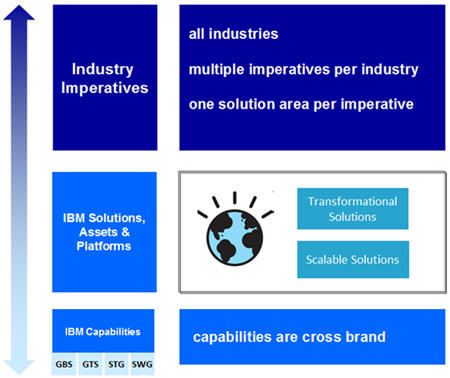

Recently IBM introduced the IBM Business Blueprint. The IBM Business Blueprint is a strategic initiative to implement a
common go to market approach across IBM with a focus on solutions. The IBM Business Blueprint establishes a common set
of concepts that enable clarity and cross brand integration in IBM’s capabilities and solution offerings. Several
of these concepts have significant implications for pre-sale solution design. The attached paper is intended to
integrate the Blueprint concepts with the concepts employed in Team Solution Design. This integration enables a logical
progression from initial client discussions of Industry Imperatives through development of a Transformation Roadmap and
finally, actual solution design. The paper is divided into the following sections.
-
The first section is IBM Blueprint Basics. This section will provide a brief description of each
of the main Blueprint concepts and relate them to appropriate work products in TeamSD.
-
The second section is TeamSD and IBM Blueprint Conceptual Relationships. This section includes a
conceptual relationship model and takes a more rigorous approach to exploring the relationships between TeamSD and
Blueprint concepts that may impact solution design.
-
The final section is IBM Blueprint Concepts in Practice. This section presents a basic scenario to
illustrate key conceptual relationships in practice.
The main concepts of the Blueprint are illustrated in the following graphic.

|